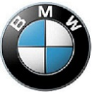
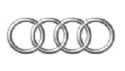
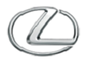

MAZDA 6
Produkowana od roku 2002 model z segmentu D (klasa średnia). Mazda 6 zastąpiła znaną serię 626. Oba samochody miały wiele wspólnych elementów, m.in. platformę podłogową G-platform opracowaną we współpracy z Fordem. Mazda 6 jest jednym z najbardziej popularnych modeli Mazdy w ostatnich latach – z taśm produkcyjnych zjechało już prawie 2,5 mln egzemplarzy. Samochód otrzymał wiele wyróżnień w międzynarodowych konkursach. Do tej pory powstały trzy generacje Mazdy 6, ostatnia została wprowadzona na rynek w roku 2012. Usportowioną wersją auta jest Mazda 6 MPS (na Starym Kontynencie) oraz Mazdaspeed6 w Stanach Zjednoczonych. W Kraju Kwitnącej Wiśni Mazda 6 sprzedawana jest pod nazwą Atenza.VW ARTEON
Produkowany od roku 2017, należący do segmentu E (wyższa klasa średnia) o nadwoziu typu fastback, Volkswagen Arteon to nowy model flagowy niemieckiej marki. Samochód bezpośrednio zastąpił Volkswagena CC i poprzedniego Passata CC, lecz również, ze względu na pozycjonowanie o klasę wyżej – wcześniejszego flagowca Volkswagena, Phaetona (do którego odwołuje się także nazwą; tylko na rynku chińskim Volkswagen sprzedaje inny model: Phideon). Volkswagen Arteon powstał na platformie podłogowej Volkswagen Group MQB Platform, podobnie jak m.in. Passat B8. Samochód został zaprojektowany przez Tobiasa Suhlmanna.

BMW Serii4
Sportowe coupe klasy średniej (segment D) produkowane od 2013 roku. Model, którego zapowiedzią była prezentacja prototypu o nazwie Concept 4 Series Coupe, został wprowadzony do oferty marki jako zastępstwo dla Serii 3 Coupe (E92). W przeciwieństwie do swojego poprzednika, Seria 4 jest samodzielnym modelem, a nie tylko dwudrzwiową wersją Serii 3. Oba samochody łączy jednak wiele rozwiązań konstrukcyjnych i technologicznych, np. zbudowano je na tej samej platformie podłogowej (F30). Seria 4 dostępna jest również w wersji cabrio. Jej topową wersją jest model M4.AUDI A6
Model klasy wyższej (segment E) produkowany nieprzerwanie od 1994 roku. W ofercie Audi „A-szóstka” zastąpiła bardzo udany model 100 i błyskawicznie poszła w ślady swojego poprzednika zdobywając silną pozycję na rynku i stając się jednym z czołowych graczy w swojej klasie. Świadczy o tym nie tylko dobra sprzedaż, ale i liczne nagrody zdobywane w prestiżowych konkursach, w tym triumf w plebiscycie na Światowy Samochód Roku 2005. Obecnie na rynku dostępna jest czwarta generacja modelu.

